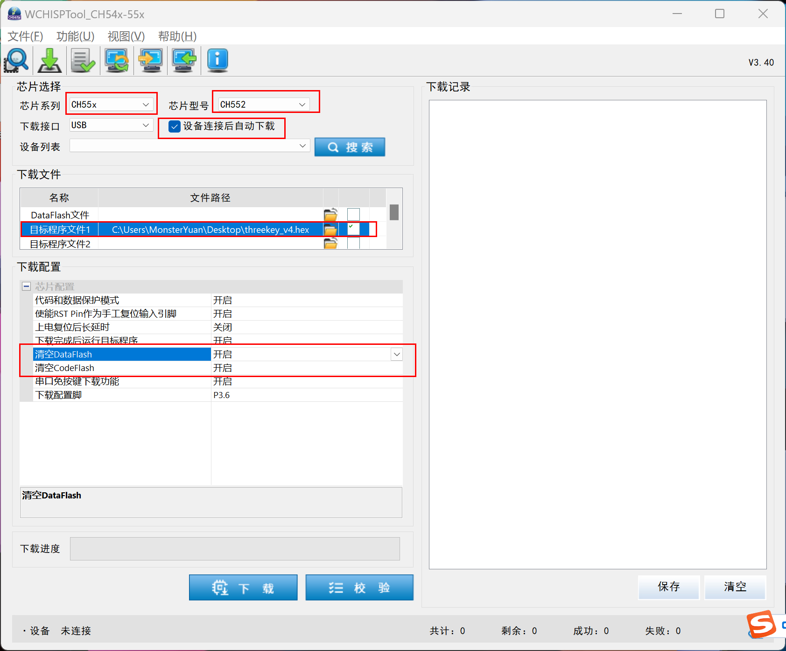
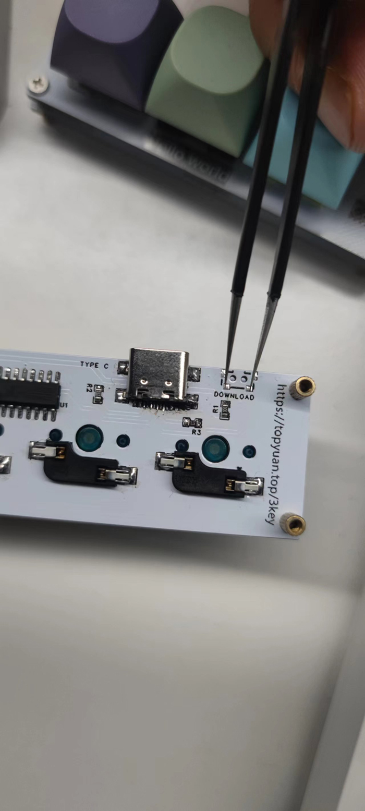
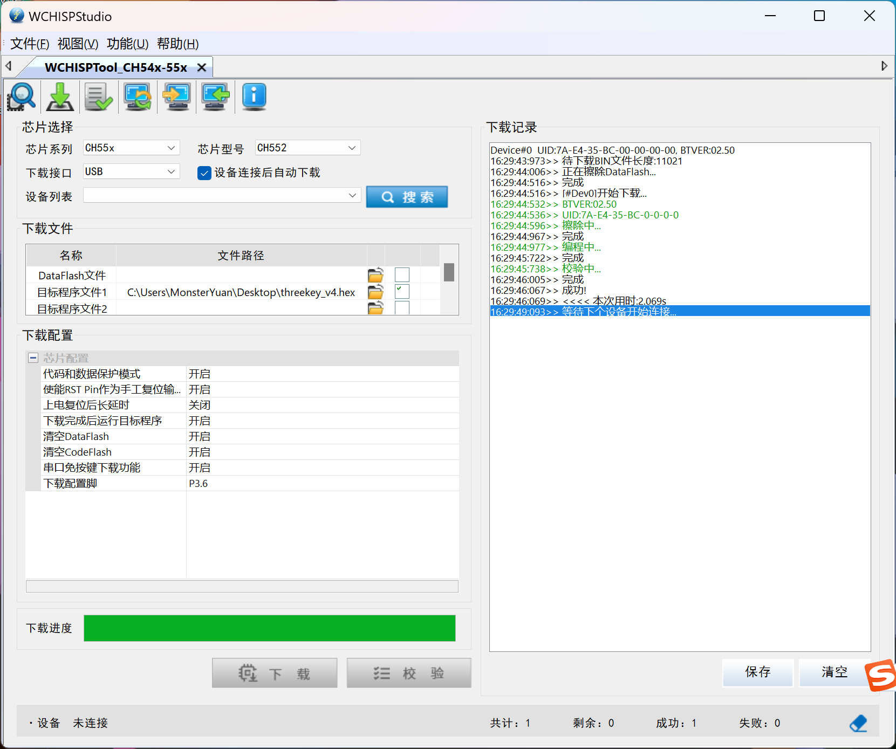

Download the flashing tools at https://www.wch.cn/downloads/WCHISPTool_Setup_exe.html this is the offical flashing tools for CH552G(only for windows)
The latest keyboard firmware: threekey_v7.0.hex Download
Open WCHISPStudio , Set as shown below

Plug the USB cable into the keyboard, not into the computer, Use a metal object (tweezers, paper clip, etc.) to connect the following two solder joints, while still connected, plug the USB cable into the computer

The following information appears on the right side of WCHISPStudio, indicating that the program has been flashed. Plug and unplug the USB cable again, and the keyboard can be used normally.
Default key: key1: ctrl+c key2:key a key3:ctrl+v Press three keys at the same time:win+l

If no message appears please try again (The two solder joints are small, and it may take several operations to ensure that the keyboard remains connected to the two solder joints when the USB is plugged in.)